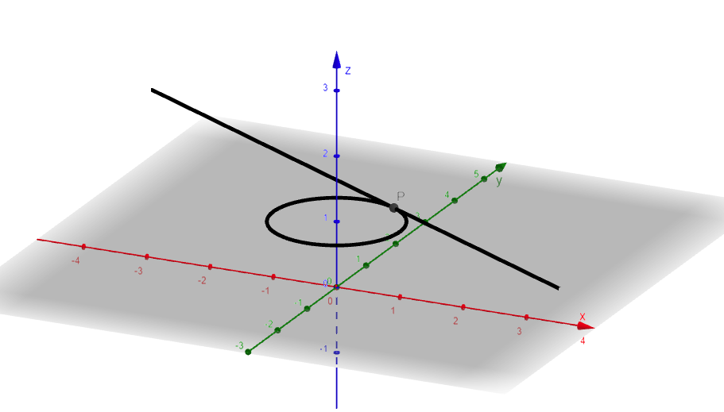

Exercicio 1
Considere a curva \(\gamma: \begin{cases} x(t)=\cos(t) \\ y(t)= \operatorname{sen}(t) \\ z(t)= 1 \end{cases}\; t\in [0,2\pi] \;\) e o ponto \(\,P=\gamma(\frac{\pi}{3}).\,\)
a) Encontre um vetor tangente à curva \(\,\gamma\,\) no ponto \(\,P.\)
b) Determine uma equação paramétrica da reta tangente à curva \(\,\gamma\,\) no ponto \(\,P.\)
c) Esboce a curva e a reta tangente ao ponto \(\,P\) sem usar nenhuma tecnologia.
Observe que a curva é uma circunferência no plano z=1, \(\, t_0=\frac{\pi}{3}\,\) e \(\, P=(\frac{1}{2}, \frac{\sqrt{3}}{2},1)\).
Agora, você deve derivar a função \(\,\vec{\gamma}(t)=(\cos(t), \operatorname{sen}(t), 1)\,\) coordenada a coordenada e substituir \(\, t\,\) por \(\, t_0\,\). Com isso você consegue o vetor tangente. Agora é só montar uma equação paramétrica da reta tangente sabendo que as equações podem ser do tipo: \(\,T(t)=\vec{\gamma}(t_0)+\vec{\gamma}\,'(t_0)t,\; t\in [a,b]\), \(\,-\infty \leq a <b\leq +\infty\).
a) \(\,\vec{v}=(-\frac{\sqrt{3}}{2}, \frac{1}{2},0),\,\) vetor tangente.
b) \(\,T(t)=(\frac{1}{2}, \frac{\sqrt{3}}{2},1)+(-\frac{\sqrt{3}}{2}, \frac{1}{2},0)t,\; t\in \mathbb{R},\,\) reta tangente.
c) 